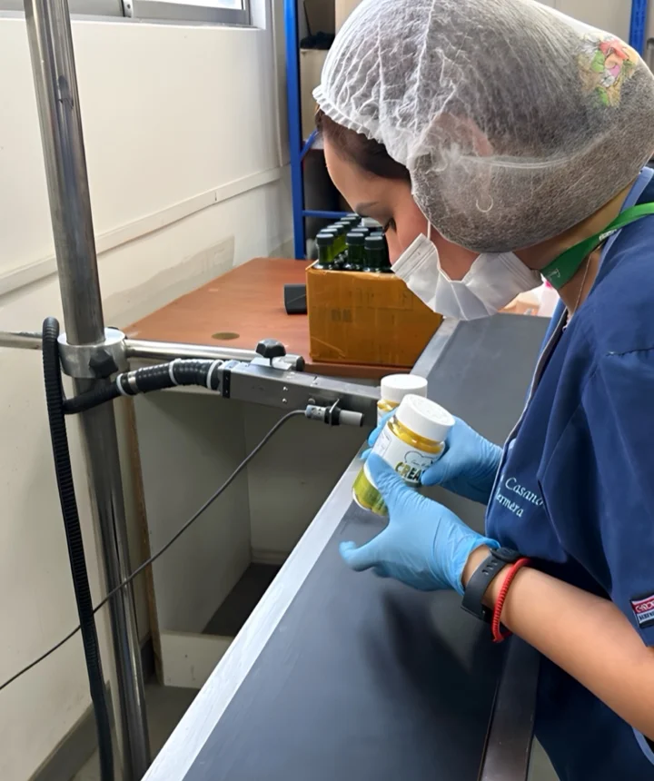
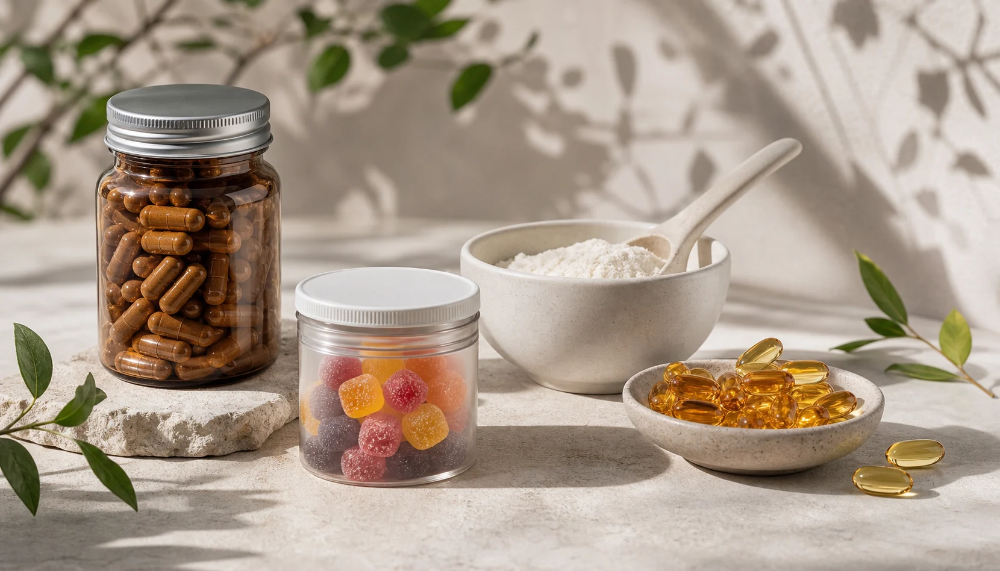
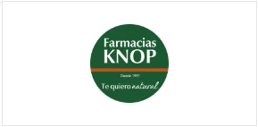
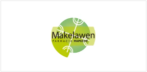
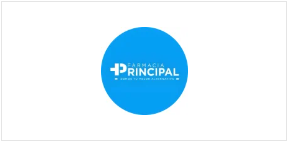
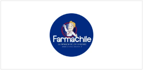
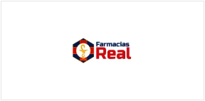
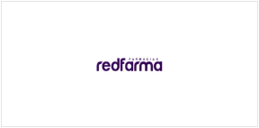
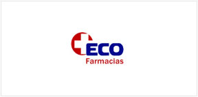

Calidad
Atención en materias primas y procesos.
Laboratorio chileno desde 1994
Suplementos alimentarios y productos naturales pensados para acompañar distintos estilos de vida, con experiencia, variedad y una mirada responsable.

Experiencia que evoluciona
Fuimos uno de los laboratorios chilenos pioneros en el rubro de los suplementos alimentarios.
Desde entonces trabajamos para acercar alternativas de bienestar a personas de todo Chile, incorporando nuevas tendencias y cuidando la selección de materias primas.
Atención en materias primas y procesos.
Opciones para diferentes estilos de vida.
Una trayectoria dedicada al bienestar.
Nuestro catálogo
Explora las cinco familias principales de Green Medical y descubre las líneas disponibles dentro de cada una.

Categoría 01
Alternativas desarrolladas para complementar rutinas de belleza y cuidado exterior.
Categoría 02
Productos de consumo para incorporar opciones naturales a distintos momentos del día.
Categoría 03
Soluciones para acompañar hábitos cotidianos de higiene y bienestar personal.
Categoría 04
Una selección orientada a quienes buscan productos vinculados con ingredientes de origen natural.
Categoría 05
La familia más amplia del catálogo, organizada según objetivos, formatos y preferencias.
La disponibilidad y presentación de cada producto puede variar. Consulta al área comercial para más información.
Lo que nos mueve
Productos que dialogan con una vida más consciente y equilibrada.
Una oferta que evoluciona junto a las necesidades de las personas.
Cápsulas, polvos, gomitas y otras presentaciones para cada rutina.
Fabricación y distribución orientada a clientes a lo largo de Chile.
Investigación y desarrollo
Experiencia, investigación y procesos que evolucionan para entregar productos pensados con responsabilidad.
La búsqueda de mejores procesos forma parte de nuestro compromiso con cada producto y con quienes confían en Green Medical.
Clientes de todo Chile
Una red de farmacias y comercios acerca los productos Green Medical a distintas comunidades del país.

Visitar sitio
Visitar perfil
Visitar sitio
Cliente regional
Cliente regional
Visitar sitio
Visitar sitioY muchas más organizaciones a lo largo de Chile
Empresas y distribuidores
Conversemos sobre oportunidades comerciales y disponibilidad para tu empresa.
Contactar área comercial